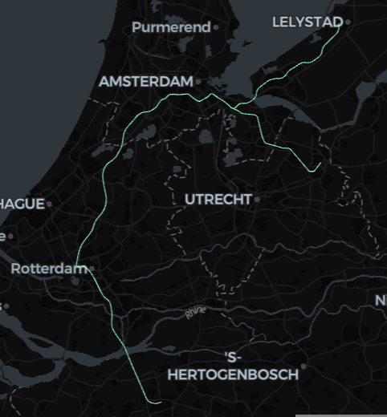

7 Import geospatial formats into Delta Lake with DuckDB
This example focuses on a few example formats, but the same workflow works just as much for any spatial format that DuckDB Spatial supports via its GDAL integration, see the output of ST_Drivers.
7.1 Setup
If install spatial fails (especially if you are not using the Free Edition or Serverless Compute, but classic compute), check whether HTTP is blocked on your (corporate) network. If so, then you need to work around it as described here.
7.2 Import Geopackage
NOTE: This example is focusing on using DuckDB to parse the GeoPackage. For more complex GeoPackages, you may need to install GDAL and use the GDAL command line tools.
# pick a layer to read
layer_name, geom_field = layers.loc[0, ["layer_name", "geom_field"]]
duckdb.sql(
f"""copy (
select * replace(st_aswkb({geom_field}) as {geom_field})
from
st_read(
'{GPKG_URL}',
layer='{layer_name}')
) to '/Volumes/{CATALOG}/{SCHEMA}/{VOLUME}/{layer_name}.parquet' (format parquet)"""
)You can store the above spark data frame as a Delta Lake table as needed:
7.3 Import OpenStreetMap data
If you need data from OpenStreetMap (OSM) that is also available via Overture Maps, you are way better off using the latter. You could follow their DuckDB tutorial, or, even better, make use of CARTO’s pre-loaded delta lake tables via the Marketplace.
However, by far not all OSM data is available in Overture Maps. For example, transit data is absent. If you need such data layers, you’ll need to load OSM data yourself, such as below.
Pick your desired area to download at https://download.geofabrik.de/ , or, not really recommended, but you could try loading the whole world via https://planet.openstreetmap.org/ .
The below humble script actually does quite some heavy lifting: DuckDB Spatial recognizes the .osm.pbf file as an OSM extract, and calls ST_Read_OSM under the hood.
You can further process this dataset into Nodes, Ways, and Relations with SQL, which is beyond the scope of this doc, but nevertheless here is a minimal example to visualize some data (showing the route shapes of the Dutch train class Intercity Direct):
%sql
create or replace table tmp_route_shapes as
with route as (
select
id as route_id,
explode(refs) as id
from
tmp_osm
where
tmp_osm.tags.type = 'route'
and tmp_osm.tags.route = 'train'
and lower(tmp_osm.tags.brand) = 'intercity direct'
),
rail as (
select
id as rail_id,
posexplode(refs) as (pos, id)
from
route join tmp_osm using (id)
where tags.railway = 'rail'
)
select
rail_id,
st_makeline(
collect_list(st_point(tmp_osm.lon, tmp_osm.lat)) over (partition by rail_id order by pos)
) as geometry
from
rail join tmp_osm using (id)def spark_viz(df, wkb_col="geometry", other_cols=None, limit=10_000, output_html=None):
# needs `%pip install duckdb lonboard shapely`
if other_cols is None:
other_cols = []
import duckdb
from lonboard import viz
try:
duckdb.load_extension("spatial")
except duckdb.duckdb.IOException:
duckdb.install_extension("spatial")
duckdb.load_extension("spatial")
dfa = df.select([wkb_col] + other_cols).limit(limit).toArrow()
if dfa.num_rows == limit:
print(f"Data truncated to limit {limit}")
query = duckdb.sql(
f"""select * replace (st_geomfromwkb({wkb_col}) as {wkb_col})
from dfa
where {wkb_col} is not null"""
)
if output_html is None:
return viz(query).as_html()
else:
viz(query).to_html(output_html)
return output_html